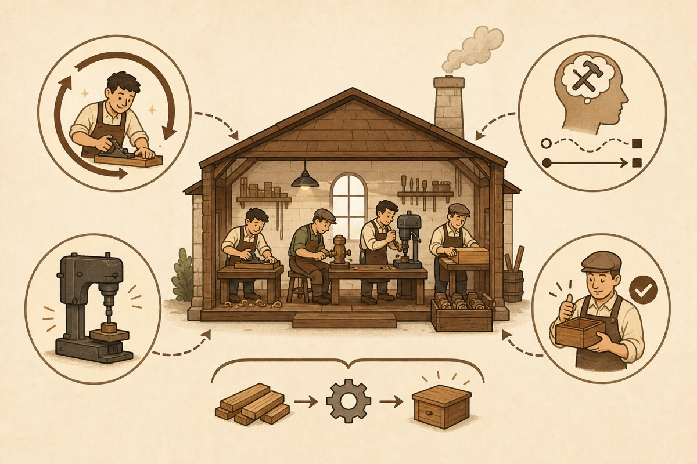

Chapter 1 / 6 parts
Why Division of Labor Worked
Before criticizing the old theory, we have to defend it: under old productivity conditions, division of labor was deeply rational.
Chapter 1
After Division of Labor: Chapter 1
Why Division of Labor Worked
Before we criticize division of labor, this chapter has to defend it.
If we cannot explain why division of labor worked so well in the past, then later claims about friction costs, shifting contradictions, and organizational redesign will sound shallow. Division of labor was not stupid. Under earlier productivity conditions, it was not merely reasonable; it was often the only rational answer.
The point here is historical, not abstract. Past societies did not face actors with unlimited capability, universal tools, and cheap execution. They faced people with narrow ability boundaries, slow learning curves, high execution costs, and specialized tools.
Under those conditions, the only way to raise output, stabilize quality, and scale production was to split complex tasks into smaller parts and let different people specialize in different links. Division of labor was not a preference. It was the production principle most suited to that era.
1. Division of labor first solved the boundary of human capability
Every production system begins with human limitation. Time is limited. Attention is limited. Physical precision is limited. The number of skills a person can master is limited.
Once production becomes even moderately complex, one person cannot reach high quality in every link at the same time. A producer who understands raw materials, designs the process, operates every tool, controls quality, and coordinates upstream and downstream can exist only in small, low-complexity settings.
The first great contribution of division of labor was to turn human limitation into system scalability. Complex production no longer required each person to master the whole. Different people could become reliable at different parts.
Work that one person could not complete became possible through task splitting and coordination. Production moved from the fantasy of the all-capable individual to a system of many limited people.
2. Division of labor raised efficiency through several mechanisms

Cutting a task apart does not automatically create efficiency. Division of labor became powerful because it generated several gains at once.
The first gain was skill accumulation. When someone repeats a class of actions, understands a class of problems, and handles a class of exceptions over time, that person becomes faster, steadier, and less error-prone.
The second gain was lower switching cost. If one person constantly moves from design to purchasing, manufacturing, inspection, and delivery, each switch requires re-entering a context and reloading a different set of tools and assumptions. Specialization reduces that churn.
The third gain was tool and process specialization. When a task stays fixed in one link, tools can be optimized for that link, and processes can stabilize around it. Many machines became meaningful because a specific link was worth optimizing separately.
The fourth gain was controllable quality. When a complex process is broken into clearer steps, each step becomes easier to observe, train, standardize, and correct. The system does not have to succeed or fail only as a whole.
So “division of labor brings efficiency” is not a slogan. It rests on skill accumulation, lower switching cost, specialized tools, and more controllable processes. These mechanisms explain why division of labor was so powerful for so long.
3. Division of labor shaped modern organization
Once division of labor became a central source of efficiency, society rebuilt its organizations around it.
First came roles. If each link can be optimized separately, organizations will turn tasks into positions, positions into responsibilities, and responsibilities into training, evaluation, and promotion paths. A role is not a natural object. It is the organizational form of division of labor.
Then came professionalization. Society began to reward people who spent long periods on narrow but deep capabilities. Education, career paths, industry boundaries, and even identity were reorganized around specialization.
Then came hierarchy inside firms. Once tasks were split into many links, something had to reconnect, sequence, supervise, and correct them. Markets could coordinate some division of labor, but not all of it cheaply. Firms expanded as a way to organize those divided links internally.
Finally came larger markets. The deeper the division of labor, the more each actor depends on the output of others. Exchange becomes essential because each person produces only a small part while society needs complete goods and services.
4. Many economic intuitions stand on division of labor
If we trace several deep intuitions of modern economics backward, many of them stand on division of labor.
Prices matter because a divided world needs a way to reconnect partial outputs. Firms matter because markets cannot always coordinate all separated links at low cost. Institutions matter because deeper specialization makes cooperation longer, more complex, and more dependent on stable expectations.
Even growth became central partly because persistent productivity gains were closely tied to deepening specialization. Division of labor was less a small chapter inside economics than one of its historical starting points.
This is why it would be careless to say old economics was simply wrong. It saw something real: in a world where action units were weak and execution was expensive, division of labor was the main axis of efficiency.
5. Its historical correctness also means it had historical conditions
Division of labor worked because a specific set of constraints existed: narrow human capability, high execution cost, slow learning, specialized tools, and process gains larger than coordination costs.
As long as those constraints held, specialization looked like the optimal principle. But that also means its advantage was conditional. It was tied to a particular productivity reality.
This point matters. The later chapters do not deny the historical correctness of division of labor. They ask what happens once the conditions that made it so powerful begin to change.
6. Conclusion: division of labor was once extremely correct
The conclusion of this chapter is simple: division of labor was not merely valid in the past; it was extremely valid.
It worked because, under old productivity conditions, splitting tasks was the best way to raise output, stabilize quality, scale production, and organize complex cooperation. Around it, modern society built roles, professions, firm hierarchies, and market exchange.
Only after recognizing that success can we ask the next question: what costs did division of labor hide, and why are those costs becoming visible now?